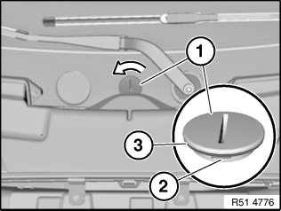
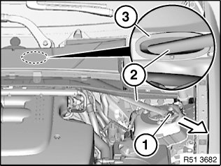
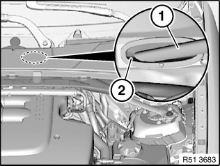

<!DOCTYPE html>
<html>
  <head>
    <title>Strut Tower Brace: Service and Repair — 2011 BMW 128i Coupe (E82) L6-3.0L (N52K) Service Manual | Operation CHARM</title>
    <meta name='description' content="Detailed repair manual for the 2011 BMW 128i Coupe (E82) L6-3.0L (N52K).">
    <link rel='stylesheet' href="../style.css">
    <meta name='viewport' content='width=device-width, initial-scale=1.0' />
  </head>
  <body>
    <div class='theme-colors header'>
      <div class='branding'><b>Operation CHARM</b>: Car repair manuals for everyone.</div>
<div class=breadcrumbs><a class='breadcrumb-part' href="../">Home</a> <b>&gt;&gt;</b> <a class='breadcrumb-part' href="../BMW/">BMW</a> <b>&gt;&gt;</b> <a class='breadcrumb-part' href="../BMW/2011/">2011</a> <b>&gt;&gt;</b> <a class='breadcrumb-part' href="../index.html">128i Coupe (E82) L6-3.0L (N52K)</a> <b>&gt;&gt;</b> <a class='breadcrumb-part' href="0.html">Repair and Diagnosis</a> <b>&gt;&gt;</b> <a class='breadcrumb-part' href="0.html#Body%20and%20Frame/">Body and Frame</a> <b>&gt;&gt;</b> <a class='breadcrumb-part' href="0.html#Body%20and%20Frame/Frame/">Frame</a> <b>&gt;&gt;</b> <a class='breadcrumb-part' href="2774.html">Strut Tower Brace</a> <b>&gt;&gt;</b> <a class='breadcrumb-part' href="12539.html">Service and Repair</a></div></div>
<div class="theme-colors floaty-message lemon-message">
  <b style="font-size: 1.5em; color: gold">Manuals through 2025 now available!</b>
  <br><br>
  Our trusted friends have launched a new website named LEMON, which has newer manuals. It also contains all the CHARM manuals.
  <br><br>
  LEMON is the spiritual successor to  CHARM, I recommend you try it!
  <br><br>
  Link: <a style='white-space: nowrap' href="../missing-page">lemon-manuals.la</a> or <a style='white-space: nowrap' href="../missing-page">lemon-manuals.org.ua</a>
  <br><br>
  (Some people have issue connecting. LEMON is investigating. For now, use Firefox or change your DNS server)
  <br><br>
  Or, hide this message: <a href="../missing-page">temporarily</a> or <a href="../missing-page">permanently</a>
</div>
<div class='main'>
<h1>Strut Tower Brace: Service and Repair</h1><br><br><br><br><br><b>51 71 371 Removing and installing/replacing tension strut on left or right spring strut dome</b><br><br><b>Special tools required:</b><br><br><br><div class='oxe-image'></div><br><br><br><br><br><b>IMPORTANT:</b><br><span class='indent-2'>&#09;</span>-<span class='indent-5'>&#09;</span>Risk of damage.<br><span class='indent-2'>&#09;</span>-<span class='indent-5'>&#09;</span>Driving without the tension strut is not permitted as otherwise the body may be damaged.<br><span class='indent-2'>&#09;</span>-<span class='indent-5'>&#09;</span>Tension strut screws must be tightened to torque and then tightened down with special tool 00 9 120.<br><br><br><div class='oxe-image'></div><br><br><br><br><br><b>IMPORTANT:</b><br><span class='indent-2'>&#09;</span>-<span class='indent-5'>&#09;</span>Risk of damage.<br><span class='indent-2'>&#09;</span>-<span class='indent-5'>&#09;</span>Catch (2) and seal (3) of cover (1) must not be damaged.<br><span class='indent-2'>&#09;</span>-<span class='indent-5'>&#09;</span>Even a minimally damaged cover (1) may result in water leaking in; if necessary, replace cover (1).<br><br><b>NOTE:</b> Two possible versions of cover (1):<br><span class='indent-2'>&#09;</span>A.<span class='indent-5'>&#09;</span>Turn cover (with notch) approx. 45&deg; counterclockwise<br><span class='indent-2'>&#09;</span>B.<span class='indent-5'>&#09;</span>Snap out cover (without notch) in upward direction<br><br><br><div class='oxe-image'></div><br><br><br><br><br>Remove cover (1) and release screw underneath.<br><br><b>NOTE:</b>  Grommet (3) must not be pulled out of bulkhead because this eliminates the possibility of correct feeding in when installed.<br><br>Release screw (1).<br>Grip grommet (3) and pull out tension strut (2) in direction of arrow.<br><br><br><div class='oxe-image'></div><br><br><br><br><br>Installation:<br>Replace screws.<br>Carefully feed tension strut (1) into grommet (2).<br>Tighten down screws to specified torque and then retighten to angle of rotation using special tool 00 9 120.<br>Tightening torque 51 71 2AZ.<br><br><h3>�܁
��
�]�
:</h3><div class='oxe-image'></div><br><br><br></div>
<div class="theme-colors footer">
  <i>pro multis</i> · <a href="../about.html">About Operation CHARM</a>
</div>
<script src="../script.js"></script>
</body>
</html>
